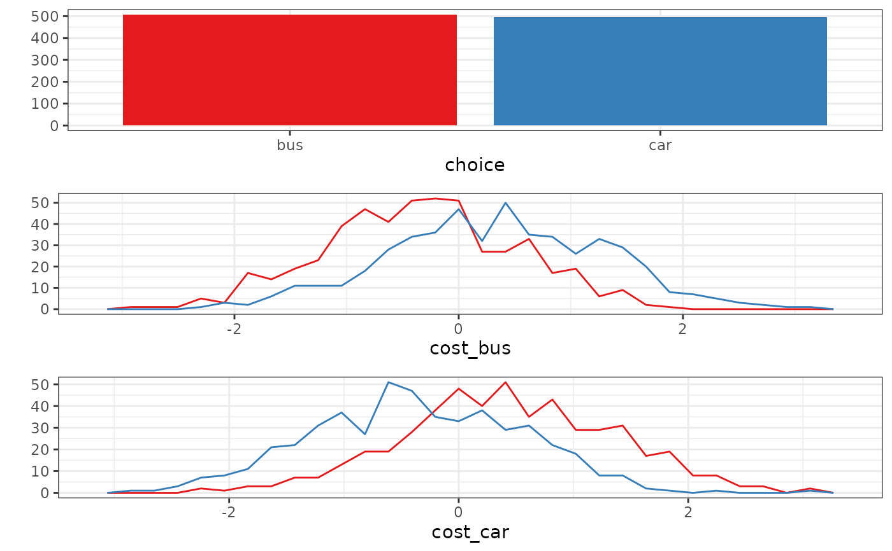

This function constructs an object of class RprobitB_data.
Usage
RprobitB_data(
data,
choice_data,
N,
T,
J,
P_f,
P_r,
alternatives,
ordered,
ranked,
base,
form,
re,
ASC,
effects,
standardize,
simulated,
choice_available,
true_parameter,
res_var_names
)
# S3 method for class 'RprobitB_data'
print(x, ...)
# S3 method for class 'RprobitB_data'
summary(object, ...)
# S3 method for class 'summary.RprobitB_data'
print(x, ...)
# S3 method for class 'RprobitB_data'
plot(x, by_choice = FALSE, alpha = 1, position = "dodge", ...)Arguments
- data
[
list]
A list with the choice data.The list has
Nelements.Each element is a list with two elements,
Xandy, which are the covariates and decisions for a decision maker. More precisely:Xis a list ofTelements, where each element is a matrix of dimensionJx(P_f+P_r) and contains the characteristics for one choice occasion.yis a vector of lengthTand contains the labels for the chosen alternatives.
- choice_data
[
data.frame]
Choice data in wide format, where each row represents one choice occasion.- N
[
integer(1)]
The number of decision makers.- T
[
integer(1)|integer(N)]
The number of choice occasions or a vector of decider-specific choice occasions of lengthN.- J
[
integer(1)]
The number >= 2 of choice alternatives.- P_f
[
integer(1)]
The number of covariates connected to a fixed coefficient.- P_r
[
integer(2)]
The number of covariates connected to a random coefficient.- alternatives
[
character()]
The names of the choice alternatives. If not specified, the choice set is defined by the observed choices.If
ordered = TRUE,alternativesis assumed to be specified with the alternatives ordered from worst to best.- ordered
[
logical(1)]
IfTRUE, the choice setalternativesis assumed to be ordered from worst to best.- ranked
[
logical(1)]
Are the alternatives ranked?- base
[
character(1)]
The name of the base alternative for covariates that are not alternative specific (i.e. type 2 covariates and ASCs).Ignored and set to
NULLif the model has no alternative specific covariates (e.g. in the ordered probit model).By default,
baseis the last element ofalternatives.- form
[
formula]
A model description with the structurechoice ~ A | B | C, wherechoiceis the name of the dependent variable (the choices),Aare names of alternative and choice situation specific covariates with a coefficient that is constant across alternatives,Bare names of choice situation specific covariates with alternative specific coefficients,and
Care names of alternative and choice situation specific covariates with alternative specific coefficients.
Multiple covariates (of one type) are separated by a
+sign. By default, alternative specific constants (ASCs) are added to the model. They can be removed by adding+0in the second spot.In the ordered probit model (
ordered = TRUE), theformulaobject has the simple structurechoice ~ A. ASCs are not estimated.- re
[
character()|NULL]
Names of covariates with random effects. Ifre = NULL(the default), there are no random effects. To have random effects for the ASCs, include"ASC"inre.- ASC
[
logical(1)]
Does the model have ASCs?- effects
[
data.frame]
A data frame with the effect names and booleans indicating whether they are connected to random effects.- standardize
[
character()|"all"]
Names of covariates that get standardized.Covariates of type 1 or 3 have to be addressed by
<covariate>_<alternative>.If
standardize = "all", all covariates get standardized.- simulated
[
logical(1)]
Isdatasimulated?- choice_available
[
logical(1)]
Doesdatacontain observed choices?- true_parameter
[
RprobitB_parameters]
True parameters for the data generating process.- res_var_names
[
list]
Reserved variable names inchoice_data.- x
An object of class
RprobitB_data.- ...
Currently not used.
- by_choice
[
logical(1)]
Group the covariates by the chosen alternatives?- alpha, position
Passed to
ggplot.
Examples
data <- simulate_choices(
form = choice ~ cost | 0,
N = 100,
T = 10,
J = 2,
alternatives = c("bus", "car"),
true_parameter = list("alpha" = -1)
)
plot(data, by_choice = TRUE)
